01
За зоной приёма
Для такой связи не нужна сотовая вышка. В основе идеи — прямой радиообмен между устройствами.

Знакомство с NodraНЕЗАВИСИМАЯ MESH-СВЯЗЬ
Мир больше зоны приёма. Мы создаём Nodra, чтобы сообщения находили путь — от человека к человеку, от узла к узлу.
МЕНЬШЕ ИНФРАСТРУКТУРЫ. БОЛЬШЕ СВОБОДЫ.
01 / ИДЕЯ
За городом, в дороге или там, где заканчивается привычная сеть. Идея Nodra проста: дать небольшим устройствам возможность передавать сообщения друг через друга.
Для такой связи не нужна сотовая вышка. В основе идеи — прямой радиообмен между устройствами.
Промежуточные узлы помогают сообщению пройти дальше. Сеть складывается из связей между ними.
«Я на месте». «Встречаемся у тропы». Иногда короткого сообщения достаточно, чтобы быть ближе.
02 / ПРИНЦИП РАБОТЫ
Один разговор.
Несколько точек связи.
Вы передаёте текст своему устройству. Оно становится первой точкой на пути сообщения.
Сообщение проходит через промежуточный узел, когда адресат находится за пределами прямой связи.
Устройство получателя принимает сообщение. Так несколько отдельных узлов становятся сетью.
Схема показывает принцип mesh-связи. Возможность и дальность передачи зависят от оборудования, рельефа и расположения узлов.
03 / ОБОРУДОВАНИЕ
Предзаказ
INDIVIDUAL
Для личного использования. Вы получаете совместимое устройство с установленной Nodra Firmware — без самостоятельной сборки, компиляции и прошивки. Nodra Hardware создан для тех, кому важно оставаться на связи там, где привычная инфраструктура заканчивается.
Вместо прямой связи только между мобильными устройствами аппаратные узлы Nodra могут передавать сообщения дальше по цепочке ретрансляторов. В подходящих условиях несколько последовательно размещённых узлов способны растянуть маршрут примерно до 10–15 км и более. Фактическая дальность зависит от рельефа, застройки, антенн и расположения узлов.
Совместимое оборудование, актуальная прошивка Nodra и базовая проверка перед отправкой.
Mesh-обмен между узлами не требует сотовой вышки или постоянного подключения к интернету.
Узлы могут сохранять и передавать сообщения дальше, помогая им добраться до получателя.
Локальная mesh-связь не зависит от доступа к мобильному интернету: ограничения подключения и режимы белых списков не прерывают сам обмен между узлами Nodra.
Содержимое сообщения остаётся зашифрованным при ретрансляции: промежуточный узел помогает доставке, но не получает ключ для чтения переписки.
КАК ОФОРМИТЬ ПРЕДЗАКАЗ
Отправьте заявку на почту Nodra. После обращения мы подтвердим очередь предзаказа, условия доставки и дальнейшие шаги.
Имя и фамилия
Телефон
E-mail для связи
Город, адрес доставки и индекс
Количество устройств
Комментарий, если есть
Nodra Hardware находится на этапе предзаказа. Срок поставки подтверждается индивидуально после обращения.
04 / НАЧАЛО ПУТИ
Nodra развивается. Сейчас проект на этапе MVP: мы работаем над обменом сообщениями и логикой их передачи между узлами.
Где мы сейчас